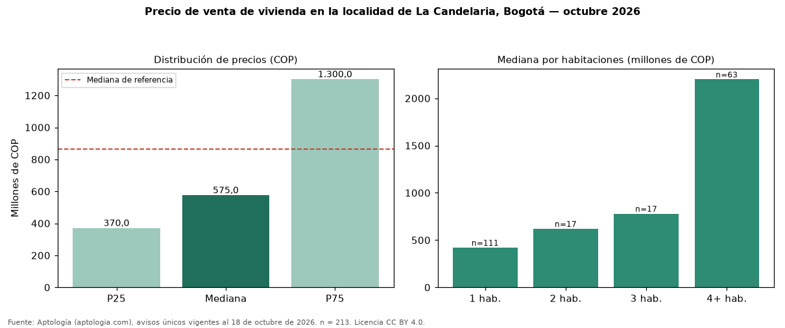

Precio de venta de vivienda en la localidad de La Candelaria, Bogotá — octubre 2026
En la localidad de La Candelaria, Bogotá, la mediana de precio de venta de vivienda es COP 575 millones (n = 213 avisos únicos). Frente a toda la oferta de venta en Bogotá (COP 866 millones), la diferencia es de 34 % por debajo. El rango intercuartílico va de COP 370 millones a COP 1,30 mil millones (razón 3,5). Por metro cuadrado, la mediana es COP 7.746.479/m² (+18 % frente a COP 6.557.377/m²), puesto 3 de 19 localidades comparables. Cruzando con la oferta de arriendo equivalente, la rentabilidad bruta implícita es 7,5 % anual. Por habitaciones: 1 habitación, COP 420 millones (n = 111); 2 habitaciones, COP 620 millones (n = 17); 3 habitaciones, COP 780 millones (n = 17); 4 o más habitaciones, COP 2,20 mil millones (n = 63). El área mediana es 71 m² (referencia: 146 m²). Datos abiertos CC BY 4.0 de Aptología; fuente y búsqueda de inmuebles: https://www.aptologia.com/venta/bogota/la-candelaria. Archivos: PDF de 2 páginas, CSV con las cifras y gráfica PNG.

| Avisos únicos | 213 |
|---|---|
| Percentil 25 | COP 370.000.000 |
| Mediana | COP 575.000.000 |
| Percentil 75 | COP 1.300.000.000 |
| Mediana por m² | COP 7.746.478 |
Fuente: avisos vigentes de portales inmobiliarios recopilados por Aptología, deduplicados (mínimo 30 avisos únicos por celda). Precios pedidos, no cerrados. Fecha: 2026-10-18.